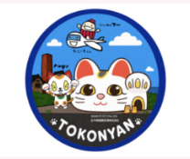

🍁 2026 名古屋親子 8 天 7 夜

2026/11/22（日／日曜日）～ 11/29（日／日曜日）｜重點：平日高山、11/28 熱田＋白鳥庭園、幼兒友善、不急行軍
開園／休館查核 · 2026/10/14
- 11/23 TOYOTA：09:30–17:00（16:30截止）；依週一國定假日開館規則安排。 官方來源 ↗
- 11/23 則武之森：工藝中心10:00–17:00；週一遇假日開館，下一平日休館。 官方來源 ↗
- 11/24 水族館：官方2026年度日曆未將當日標為休館，因此保留原安排，不與LEGO日對調。通常期09:30–17:30（16:30截止），當日細節再以最新月曆確認。 官方來源 ↗
- 11/25 LEGO：官方11月月曆已公布10:00–17:00，當天開園。 官方來源 ↗
- 11/26 犬山城：09:00–17:00（16:30截止）；當日不在固定休城期。三光稻荷08:30–16:30。 官方來源 ↗
- 11/27 高山：宮川朝市07:00–12:00，售完可能早收；高山陣屋08:45–16:30（16:00截止），卡片附各自來源。 官方來源 ↗
- 11/28 白鳥庭園：官方已公布當日有紅葉點燈，09:00開園、延長至20:00（19:30截止）；點燈開始時刻另看活動細則。 官方來源 ↗
- 11/29 Flight Park：10:00–17:00，通常全年無休；機場蝦仙貝之里08:00–21:00。 官方來源 ↗
臨時休館：港口大樓（含海洋博物館／展望室）、南極觀測船富士、Port House 在2026/8/1–11/30不開放，與水族館本館不同。本行程未安排這些設施。店家另有店休，營業可能臨時調整。
Day 1｜11/22（日／日曜日）抵達名古屋
抵達日補給
- 09:30 青上森
- 11:45 桃園國際機場
- 18:50 中部國際機場（新特麗亞）
- 20:30 入住 AIRBNB 民宿
- 21:00 補貨
第一天只做入住＋採買，不再塞景點。
Day 2｜11/23（一／月曜日・日本國定假日）TOYOTA＋Noritake 慢遊日
親子購物日本國定假日
- 08:30 AIRBNB 出發
- 09:30 開館入場（約 2.5～3 小時）
- 12:30 午餐＋購物
- 15:30 散步（約 30～45 分鐘）
- 16:30 視小朋友體力繼續購物或提早回住宿
- 18:00 回 AIRBNB／附近晚餐
11/23 為日本國定假日，安排 09:30 開館即入場；之後到 AEON MALL Nagoya Noritake Garden 午餐與購物，再到則武之森散步。假日預留移動與休息時間，依小朋友體力彈性調整。
Day 3｜11/24（二／火曜日）名古屋港水族館＋榮
親子市區
- 08:30 出發
- 10:00 （約 3 小時）
- 13:30 回 AIRBNB 午睡／休息
- 16:00
- 16:45 周邊
- 17:15 ／／
- 18:30 晚餐
Day 4｜11/25（三／水曜日）LEGOLAND JAPAN
整日親子
- 08:30 出發
- 10:00
- 16:00 視小朋友體力離園
- 17:30 回 AIRBNB 休息
- 18:30 附近晚餐／超市補給
不要再排大型夜間景點，保留體力給後面兩天。
Day 5｜11/26（四／木曜日）犬山半日＋名古屋站
犬山平日購物
- 09:00 AIRBNB 出發
- 10:15
- 11:25
- 12:30
- 14:45 回名古屋站
- 15:30 ／
- 19:00 晚餐後回住宿
犬山改到 11/26（四）平日，避開 11/23 日本國定假日；依序逛犬山城下町、三光稻荷神社與犬山城，下午回名古屋站休息兼購物，為隔天高山保留體力。
Day 6｜11/27（五／金曜日）飛驒高山一日遊
平日安排JR 特急 Hida回程彈性
- 07:30 AIRBNB 出發前往 JR 名古屋站
- 約08:00 搭 JR 特急 Hida 前往高山（去程建議先訂指定席）
- 約10:30 抵達高山站
- 10:45 （先逛，避免太晚收攤）
- 11:30 散策
- 12:30
- 13:45
- 14:00 （小朋友累可直接略過）
- 15:00 老街伴手禮／咖啡／自由活動
- 16:00後 視體力決定回程 Hida；可接受拆成 2～3 人小組坐，不必硬找連號
- 晚上 回名古屋，晚餐簡化
回程策略： 不先綁死時間。下午約提前 1～2 小時查看指定席；有位就買，若只剩零散座位可拆開坐。一般非全車指定席期間，自由席可作備案。
Day 7｜11/28（六／土曜日）大須＋熱田神宮＋白鳥庭園
賞楓主日夜間點燈熱田區
- 09:30 AIRBNB 出發
- 10:30 （早午餐、逛街約 1.5 小時）
- 12:15 前往周邊
- 12:45 （蓬萊軒／鰻魚飯，依候位彈性）
- 14:15 參拜、散步
- 15:45 前往
- 16:00 入園，先看白天／黃昏楓紅
- 17:00左右 夜間點燈後看夜楓
- 18:00～18:30 視人潮與小朋友體力離園
- 19:00 晚餐後回住宿
這天是整趟賞楓重點。 熱田神宮與白鳥庭園距離近，放同一天最順。行程採「大須 → 熱田 → 白鳥」一路往南，避免熱田與大須之間來回折返；白鳥庭園約 16:00 先入園，可一次看到白天楓紅、黃昏與點燈。週六人潮較多，點燈後看一輪就可提早離開。
Day 8｜11/29（日／日曜日）中部國際機場＋回台
返程
- 09:00 退房／前往機場
- 10:40 中部國際機場（新特麗亞）
- 11:00
- 14:30 ／機場購物
- 下午 提早完成報到、用餐、逛機場
- 晚上 搭機回桃園